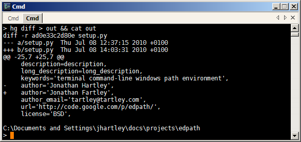

More Colored Terminal text on Windows: AnsiCon
A reminder for myself:
ANSI escape characters don't work properly in Windows terminals:

To make them work properly, use
AnsiCon. Unzip it somewhere
permanent (eg. %ProgramFiles%\ansicon) and install it with:
ansicon.exe -i
start a new terminal, and lo:

Fine tune the appearance of the programs generating the color, for example customise 'hg diff' by editing \~/.hgrc:
[extensions]
color =
[color]
status.modified = yellow bold
status.unknown = white
status.deleted = red_background white bold
diff.deleted = red bold
diff.inserted = green bold
diff.file_a = white
diff.file_b = white
diff.diffline = white_background black
diff.extended = yellow bold
diff.hunk = underline black
diff.changed = yellow bold

ANSI is correctly stripped out if the output of a program is not a terminal, so the colored output won't interfere with saving to files nor machine-parsing of the text:

Finally, insert some ANSI codes into your prompt, by setting environment variable PROMPT:
set PROMPT=$E[0;36m$P$_$E[36;1m$G$E[0m$S

Multiple posts on colors and terminal text is perhaps a bit obsessive of me. I think I'm all done now.
Comments
Comments powered by Disqus